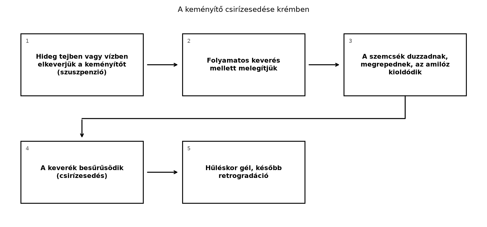

Képzeld el a reggeli műhelyt: a cukrász vaníliakrémet főz, mert délután krémes készül. A tanuló a forró tejbe önti a kukoricakeményítőt, és azonnal csomós, „lisztes” lesz a krém. Közben bejön egy vendég, aki gluténmentes tortát rendel; a családban lisztérzékeny van. Ha a cukrász a sima búzalisztet kicseréli rizslisztre anélkül, hogy a keveréket megtervezné, a piskóta lapos, száraz és morzsálódó lesz.
Ebben az alfejezetben a keményítő működését, a darákat és a gluténmentes lisztkeverékeket tanulod meg. Ezt a tudást használjuk később a(z) Keverés, habverés, dagasztás, resztelés, forrázás és főzés alfejezetben, valamint a(z) Tojáskrémek I: főzött sárgakrém és vaníliakrém alfejezetben, amikor hibamentes főzött krémet készítünk.
A keményítő hideg folyadékban nem oldódik, csak lebeg; melegítésre megduzzad, és besűríti a keveréket.

Két helyes út van: a hideg szuszpenziót együtt melegítjük a folyadékkal, vagy (főzött krémnél) a hideg szuszpenziót vékony sugárban, erős keverés mellett öntjük a forró alaphoz. A folyamat kulcsa: hidegen elkeverni, melegen csirízesíteni. Ha a száraz keményítőport forró folyadékba szórod, a szemcsék kívül azonnal duzzadnak, a közepük nyers marad, és csomók alakulnak ki.
Definíció. A keményítő növényi raktározott szénhidrát; szemcséi két fő poliszacharidot, amilózt és amilopektint tartalmaznak. Hideg vízben nem oldódik, cukrászati sűrítőanyagként hő hatására válik hasznossá.
Definíció. A csirízesedés az a folyamat, amelyben a keményítőszemcsék meleg folyadékban megduzzadnak, részben megrepednek, és az amilóz a folyadékba oldódik, így a keverék viszkozitása hirtelen megnő. A teljes csirízesedés hőmérséklete keményítőfajtánként eltér.
Definíció. A retrogradáció az a hűlés és tárolás során bekövetkező folyamat, amikor a kioldódott amilóz és a duzzadt amilopektin láncai újra rendeződnek, a gél merevebb lesz, és idővel vizet is kiengedhet. Ezért a keményítős krémek néhány óra alatt „megállnak”, de túl hosszú tárolás vagy fagyasztás után vizesedhetnek.
Definíció. A módosított keményítő olyan keményítő, amelyet fizikai vagy engedélyezett kémiai eljárással úgy alakítottak át, hogy jobban ellenálljon hőnek, savnak, keverésnek vagy fagyasztásnak, és kisebb legyen a retrogradációja. Az ilyen keményítőt az élelmiszer-adalékanyagokra vonatkozó uniós szabályok szerint kell értékelni, és a felhasznált anyagot, mennyiséget a gyártói adatlappal kell igazolni (ellenőrizendő: az adott módosított keményítő pontos megnevezése, feltétele és jelölése). A részletes adalékanyag-szabályozást a(z) Adalékanyagok: szabályozás, E-számok és csoportok alfejezetben tárgyaljuk.
A keményítőfajták közötti különbségek:
| Keményítőfajta | Tájékoztató csirízesedési tartomány (°C) | Gél/krém jellege | Tipikus cukrászati felhasználás | Korlát, hibalehetőség |
|---|---|---|---|---|
| Burgonyakeményítő | 58–66 (ellenőrizendő) | Átlátszó, magas kezdeti viszkozitás, hosszabb forralásra lágyulhat | Főzött krémek, puding első sűrítése, gluténmentes süteményliszt-keverékek | Forralás után sokat veszíthet sűrítőerejéből |
| Kukoricakeményítő | 62–72 (ellenőrizendő) | Sűrű, enyhén sárgás, stabilabb gél | Vaníliakrém, főzött sárgakrém, gyümölcstöltelék | Savas gyümölcsökben hígulhat |
| Búzakeményítő | 58–64 (ellenőrizendő) | Lágyabb, rövid gél | Főzött krémek, sós sűrítések, sütőporos tészták kiegészítése | Közönséges formában nem gluténmentes, kivéve a jelölt, speciálisan tisztított terméket |
| Rizskeményítő | 68–78 (ellenőrizendő) | Krémes, homogén, jó fény | Fehér krémek, gluténmentes keverékek, gyümölcszselé | Magasabb csirízesedési hőmérséklet |
A hőmérsékleteket mindig a gyártói adatlap és az adott recept finomíthatja; a táblázat tanulási célt szolgál.
Szabály. A keményítőt mindig hideg folyadékkal, pici vízzel, tejjel vagy a receptben szereplő lé egy részével keverd simára, mielőtt a forró alaphoz adod. A száraz keményítőport soha ne szórd közvetlenül forró folyadékba, mert a szemcsék felülete azonnal csirízesedik, és csomó képződik.
Továbbvitt eredmény. A csirízesedés és a retrogradáció szabályait használjuk a(z) Keverés, habverés, dagasztás, resztelés, forrázás és főzés alfejezetben a főzési műveletekhez, és a(z) Tojáskrémek I: főzött sárgakrém és vaníliakrém alfejezetben a hibamentes krémfőzéshez.
Kritikus pont. A krémet főzés után sekély edényben, gyorsan hűtsd le (tanulási példa: 2 órán belül 10 °C alá, majd 0–5 °C-on tárold; ellenőrizendő: NÉBIH-útmutató és az üzemi HACCP-terv). Helyesbítés: ha a hűtési idő túllépi a határt, a krémet selejtezni kell. Allergének: tej (tojásos krémnél tojás is).
Figyelem. A forró krém gőze és a forrás közbeni fröccsenés égési sérülést okozhat. Hosszú nyelű fakanállal vagy habverővel dolgozz, megfelelő méretű edényben, és a forró edényt ne fogd meg vizes konyharuhával.
Miért kell a forralás? A csirízesedés csak megfelelő hőmérsékleten teljes; a nyers keményítő „lisztes” íze forralás után eltűnik. Miért kell keverni? A duzzadó szemcsék összeállnak, és a hőátadás egyenlőtlenné válik.
Definíció. A dara a gabona malomipari feldolgozásával nyert, a lisztszemcséknél nagyobb, különböző finomságúra osztályozott részecskékből álló termék. A hántolt gabonatermékeknél a külső héjat eltávolítják; ezek általában rostban gazdagabbak, mint a fehér lisztből készült termékek.
Cukrászati felhasználásuk: grízes tejbedara, túrós édességek, darapuding, répatorta alapja, ropogós tekercs darával. A pelyhek (zabpehely, hajdinapehely, árpapehely) müzliszeletbe, házi kekszbe, ropogós feltétnek valók. A puffasztott termékek (rizs, kukorica, amaránt) hő- és nyomáskezeléssel készülnek, levegős, ropogós állagot adnak, például grillázsban, bonbontöltelékben vagy sós desszertkiegészítőként.
Allergének. A búzaalapú darák glutént tartalmaznak; gluténmentes termékhez rizsdara, kukoricadara vagy jelölt gluténmentes zab használható (ellenőrizendő: a gluténmentes zab keresztszennyeződési követelménye).
Definíció. A gluténmentes liszt olyan őrlemény, amely természetesen nem tartalmaz búza-, rozs-, árpa- vagy tönkölyeredetű glutént, illetve a keresztszennyeződése a határérték alatt marad.
A leggyakoribbak:
Szabály. Gluténmentes sütéshez ne cseréld a búzalisztet egyetlen gluténmentes lisztre 1:1 arányban. A búzaliszt sikérje adja a tészta rugalmas vázát; ennek hiányában keményítőt, fehérjét (tojás), rostos kötőanyagot (útifűmaghéj, xantán) vagy gyári gluténmentes keveréket kell használni.
Példa. Gyümölcsös gluténmentes piskótához működő keverék: 40% rizsliszt, 30% kukoricakeményítő, 20% burgonyakeményítő, 5% mandulaliszt, 5% útifűmaghéj. Omlós linzerhez kevesebb útifűmaghéj, több rizsliszt és mandula; kenyérszerű tésztához inkább készen kapott gluténmentes kenyérkeverék.
Jogszabály. Az 1169/2011/EU rendelet II. melléklete a gluténtartalmú gabonát jelölendő allergénként sorolja fel. A „gluténmentes” és „nagyon alacsony gluténtartalmú” állítások feltételeit külön uniós rendelet állapítja meg; a leggyakrabban hivatkozott határérték gluténmentes terméknél legfeljebb 20 mg/kg, a „nagyon alacsony gluténtartalmú” terméknél 21–100 mg/kg (ellenőrizendő: hatályos határérték és jelölési feltétel). A vendéglátásban készített terméknél csak akkor használj mentes állítást, ha a keresztszennyeződést is ki tudod zárni; egyébként inkább a pontos összetevőt mondd el a vendégnek.
A sütőipari termékek két nagy csoportja fontos a cukrász számára:
A száraztészták csoportosítása:
1. kidolgozott példa. Egy vaníliakrém-recept 1 liter tejhez 80 g burgonyakeményítőt ír. A tanműhelyben csak kukoricakeményítő van. Gyakorlati tapasztalat szerint a burgonyakeményítő kb. 15%-kal erősebb sűrítő, mint a kukoricakeményítő (tájékoztató arány, ellenőrizendő). Mennyi kukoricakeményítő kell?
Adott: , gyakorlati szorzó . Keresett: . Képlet:
Tehát kb. 92 g kukoricakeményítőre lesz szükség. Az eredményt próbafőzés vagy kóstolás erősítse meg, mert az arány csak tájékoztató. ∎
2. kidolgozott példa. 1200 g gluténmentes piskótaliszt-keveréket kell összeállítani: 40% rizsliszt, 30% kukoricakeményítő, 20% burgonyakeményítő, 5% mandulaliszt, 5% útifűmaghéj.
Adott: , , , , , . Keresett: az egyes összetevők tömege. Képlet:
Behelyettesítés:
Ellenőrzés: , és . ∎
Keményítős krém: sima, csomómentes, a keverőt bevonó, fényes; kihűlés után szeletelhető, de még könnyen simítható; nincs nyers lisztes íz, nincs bőr. Gluténmentes tészta: a forma tartja, metszete egyenletes, morzsája nem porlik jobban, nem gumiszerű, nincs szokatlan keserű utóíz.
Egy cukrászda esküvői gluténmentes tortát vállal. A cukrász a tortapiskótához sima búzaliszt helyett kizárólag rizslisztet használt; az eredmény lapos és repedezett lett. A hibát a tésztakészítés közben vették észre, amikor a massza túl folyós volt. A javítás: kidobták a próbatésztát, és új adagot készítettek gluténmentes keverékkel (rizsliszt, kukoricakeményítő, burgonyakeményítő, útifűmaghéj), valamint egy plusz tojásfehérjét vertek bele. Külön tálat, külön habverőt használtak, és a sütőrácsot friss sütőpapírral fedték le, hogy a búzamaradvány ne szennyezzen. Az esküvői torta jól sikerült; a vendéget írásban tájékoztatták arról, hogy a konyha bár elkülönítve dolgozott, nem tanúsított gluténmentes üzem volt. A tanulság: a gluténmentes címke a keresztszennyeződés kockázatát is magában foglalja.
1. feladat (A). Definiáld a csirízesedést és a retrogradációt.
2. feladat (A). Sorold fel, melyik keményítőfajta illik a legjobban az alábbi termékekhez: savas gyümölcstöltelék, fehér vaníliakrém, 4 hónapos fagyasztott mousse.
3. feladat (B). Egy recept 40 g kukoricakeményítőt ír 1 l tejhez. Hány gramm burgonyakeményítőt használj, ha a burgonyakeményítő 15%-kal erősebb sűrítő?
4. feladat (B). 1500 g gluténmentes keveréket kell összeállítani a 40% rizsliszt, 30% kukoricakeményítő, 20% burgonyakeményítő, 5% mandulaliszt, 5% útifűmaghéj arányban. Add meg az összetevők tömegét.
5. feladat (C). Egy gluténmentes keverékben 600 g rizsliszt, 300 g kukoricakeményítő, 200 g burgonyakeményítő és 100 g útifűmaghéj van. Számítsd ki az útifűmaghéj tömegszázalékát, és döntsd el, hogy a keverék inkább piskótához vagy kenyérhez való-e, ha a magas rosttartalom tömör tésztát ad.
6. feladat (D). Készíts otthon vagy tanműhelyben 1 l tejből vaníliakrémet: 80 g cukor, 80 g kukoricakeményítő, 1 tojássárgája (kb. 18 g, pasztőrözött vagy alaposan hőkezelt), 1 vaníliarúd (kb. 3 g) vagy 5 g vaníliás cukor. Kezdd higiéniai munkakezdéssel (kézmosás, tiszta eszközök). Allergének: tej, tojás. A krémet fel kell főzni, majd gyorsan le kell hűteni és hűtve kell tárolni (lásd a kritikus pontot). Töltsd ki a technológiai lap vázlatos adatait: anyaghányad, hideg szuszpenzió, hevítés, csirízesedés ellenőrzése, hűtés. Fotózd le a kész krémet, és értékeld: sima-e, csomómentes-e, megtartja-e a formáját.
Önellenőrzés – válaszok: 1. hamis; 2. burgonyakeményítő; 3. lásd a definíciót; 4. c) rizsliszt; 5. mert a hideg keverés egyenletes szuszpenziót ad, és a forró folyadékban a szemcsék egyszerre, nem csomósan duzzadnak; 6. a gluténmentes állítású termék gluténtartalma legfeljebb 20 mg/kg (ellenőrizendő).
1. feladat. Csirízesedés: a keményítőszemcsék meleg folyadékban duzzadnak, megrepednek, amilózt adnak le, és a keverék besűrűsödik. Retrogradáció: hűlés és tárolás során a keményítőláncok rendeződnek, a gél merevedik, és vizet ereszthet.
2. feladat. Savas gyümölcstöltelékhez: saválló módosított keményítő (gyártói adatlap szerint); natív keményítőnél a savat (citromlé) a csirízesedés után add hozzá; fehér vaníliakrémhez: kukoricakeményítő (a tanult alapeljárás), rizskeményítő is jó, a burgonyakeményítő hosszú főzésre elveszti sűrítőerejét; fagyasztott mousse-hoz: módosított, fagyasztásálló keményítő vagy gyártói adatlappal igazolt stabilizátor.
3. feladat. Adott: , burgonya 15%-kal erősebb. Keresett: . Képlet:
Tehát kb. 35 g burgonyakeményítő. ∎
4. feladat. Rizsliszt: ; kukoricakeményítő: ; burgonyakeményítő: ; mandulaliszt: ; útifűmaghéj: ; összesen 1500 g. ∎
5. feladat. Összes tömeg: . Útifűmaghéj aránya:
Ez magas, az 5%-nál több rostos kötőanyag miatt a keverék inkább ruganyos, kenyérszerű tésztához való; piskótához túl tömör lehet.
6. feladat. Értékelési szempontok: az anyaghányad-átszámítás pontos; a hideg szuszpenzió sima, csomómentes; a krém felfőz, rövid ideig forralod; hűtés fóliával letakarva; a termék sima, fényes, nem folyik szét; a készítés során betartod a kézmosás és eszközmosás higiéniáját. A jegyzőkönyvben szerepeljen a mért hőmérséklet és a kóstolás eredménye.
A keményítők hideg vízben csak szuszpenziót alkotnak; melegítés hatására megduzzadnak, amilózt adnak le, és csirizesednek. A csirízesedési hőmérséklet fajtánként jellemző: burgonya kb. 58–66 °C, kukorica kb. 62–72 °C, rizs kb. 68–78 °C (ellenőrizendő). A hűlés során a gél merevedik, ezt nevezzük retrogradációnak, amely vizesedést is okozhat; fagyasztáshoz és savas töltelékhez módosított keményítőt válassz. A keményítőt mindig hideg folyadékkal keverd simára, mielőtt forróba öntöd. A gluténmentes őrlemények (rizs, kukorica, hajdina, mandula, keményítők) önmagukban nem pótolják a sikért; működő piskótához és omlós tésztához arányos keverékre, tojásra és kötőanyagra van szükség. A „gluténmentes” állítás szigorú határértékhez és keresztszennyeződés-védelemhez kötött (ellenőrizendő: hatályos határérték). A darák, pelyhek és puffasztott termékek a süteményeknek testet, ropogást és ízt adnak; a sütőipari morzsák pedig torta- és desszertalapokat.
Továbbvitt eredmény. A csirízesedés gyakorlati használata a(z) Keverés, habverés, dagasztás, resztelés, forrázás és főzés és a(z) Tojáskrémek I: főzött sárgakrém és vaníliakrém alfejezetben kerül alkalmazásra; az ottani krémek csak akkor lesznek simák, ha a keményítőt itt tanult módon hidegen elkeverjük, felfőzzük és gyorsan hűtjük.
Forráskiindulópontként a NÉBIH élelmiszerlánc-felügyeleti oldala és a Gabonaszövetség szakmai anyagai szolgálnak; a konkrét értékeket és jogszabályi feltételeket a kiadás előtt ellenőrizni kell: csirízesedési hőmérsékletek, sűrítési arányok, a „gluténmentes” határérték, a módosított keményítőkre vonatkozó adalékanyag-engedély, a gluténmentes zab keresztszennyeződési követelménye, valamint a gyártói adatlapokon szereplő alkalmazási javaslatok.